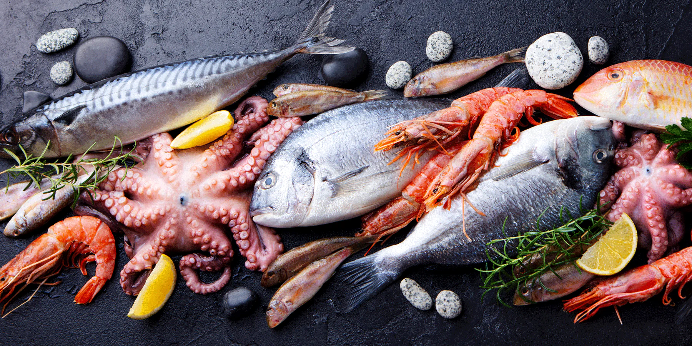
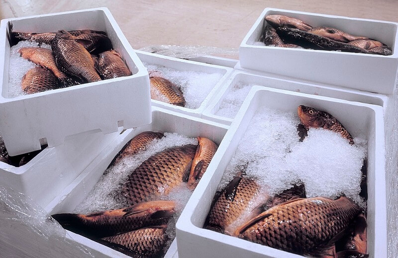
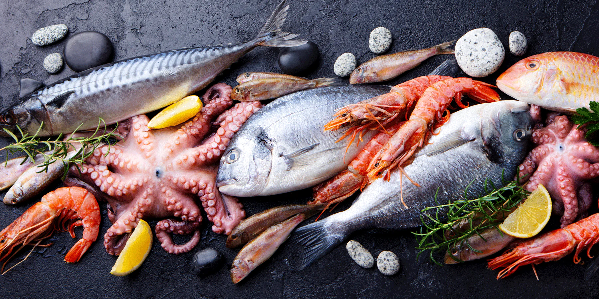
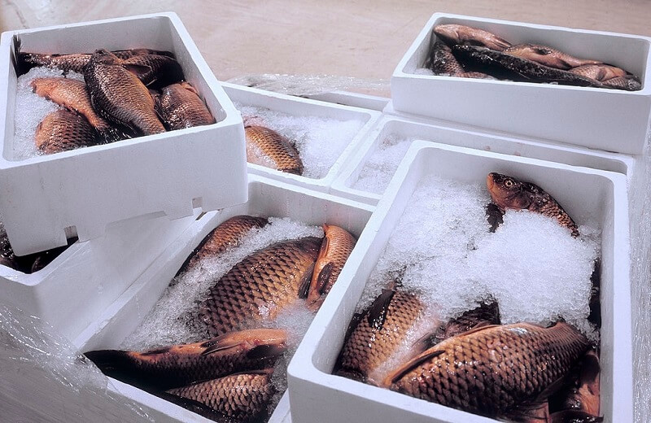

About Us
Online Fishery Market was founded in 2020 with the goal of providing fresh seafood to customers all over the world. Our team is made up of experienced fishermen and seafood experts who are passionate about delivering the highest quality products to our customers.
We work directly with local fishermen and seafood processors to ensure that our products are always fresh and sustainably sourced. We believe in responsible fishing practices that protect the ocean and its wildlife for future generations.
 



Our online marketplace makes it easy for customers to browse and purchase a wide variety of seafood products, from wild-caught fish to shellfish and more. We also offer recipes and cooking tips to help our customers prepare their seafood at home. We are committed to providing exceptional customer service and ensuring that every order is delivered on time and in perfect condition.
Thank you for choosing Online Fishery Market for your seafood needs. We look forward to serving you!
CEO LIM JIA SHENG